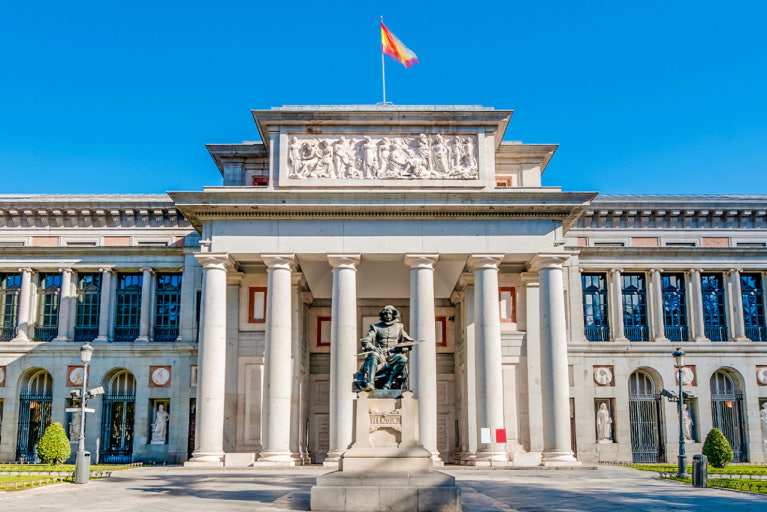
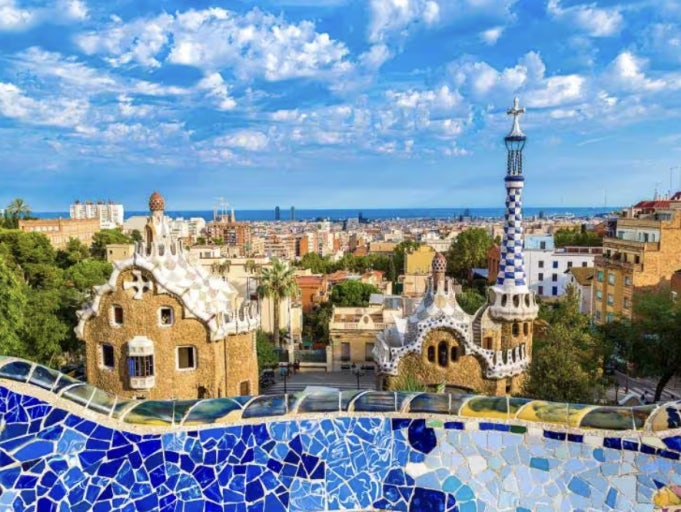
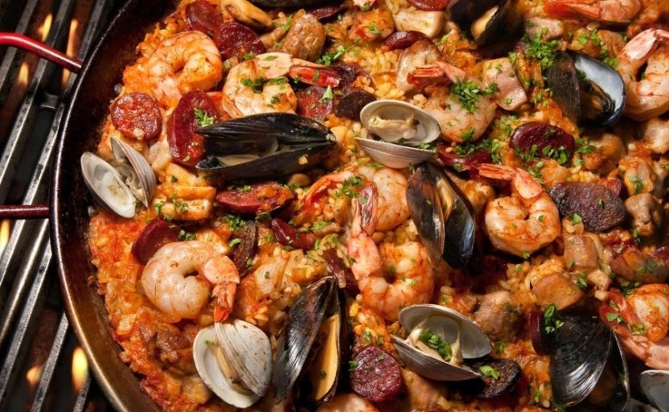
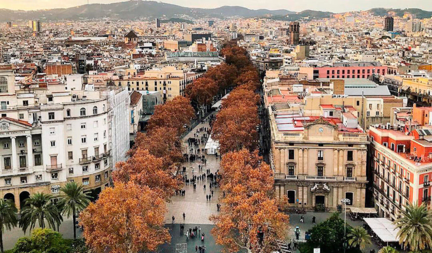

🏖️ 여행
매혹적인 유럽의 보물, 스페인 여행기
스페인은 그 자체로 하나의 예술입니다. 가우디의 건축물, 플라멩코의 열정, 피카소와 달리의 흔적, 그리고 지중해의 태양까지. 이번 여름, 저는 마드리드와 바르셀로나를 중심으로 스페인을 여행하며 그 매력을 온몸으로 느낄 수 있었습니다.
1. 마드리드 – 예술과 역사 속을 걷다
마드리드는 스페인의 수도답게 문화와 예술의 중심지였습니다. 프라도 미술관에서는 고야와 벨라스케스의 작품을 직접 마주할 수 있었고, 레티로 공원에서는 한가로운 오후를 즐길 수 있었습니다.
2. 바르셀로나 – 가우디의 도시
바르셀로나는 마치 동화 속 도시에 온 것 같았습니다. 사그라다 파밀리아 성당은 규모와 아름다움에서 말로 다 표현할 수 없는 감동을 주었고, 구엘 공원은 마치 꿈속 정원처럼 신비로웠습니다.
3. 맛있는 스페인, 절대 빼놓을 수 없는 먹방!
스페인은 미식의 천국입니다. 마드리드의 따빠스 바에서 시작해, 바르셀로나의 해산물 빠에야까지. 특히 감바스 알 아히요(마늘 새우)는 한국인 입맛에도 딱 맞아 매일 먹고 싶을 정도였습니다.
4. 소매치기 조심! 안전한 여행 팁
스페인 여행에서 가장 많이 듣는 말 중 하나가 ‘소매치기 조심’입니다. 실제로 지하철이나 관광지 근처에서는 조심하는 것이 중요합니다. 여권은 호텔에 보관하고, 가방은 앞으로 메는 것이 좋습니다.
5. 마무리하며 – 스페인은 다시 찾고 싶은 나라
짧은 일정이었지만 스페인의 매력은 끝이 없었습니다. 예술, 음식, 사람, 풍경, 그 모든 것이 아름다웠습니다. 다음에는 안달루시아 지역이나 발렌시아에도 꼭 가보고 싶네요.
✈️ 스페인은 단순한 여행지를 넘어서, 삶의 여유와 감성을 다시 느끼게 해주는 곳이었습니다. 여행을 계획 중이라면 꼭 스페인을 리스트에 올려보세요!